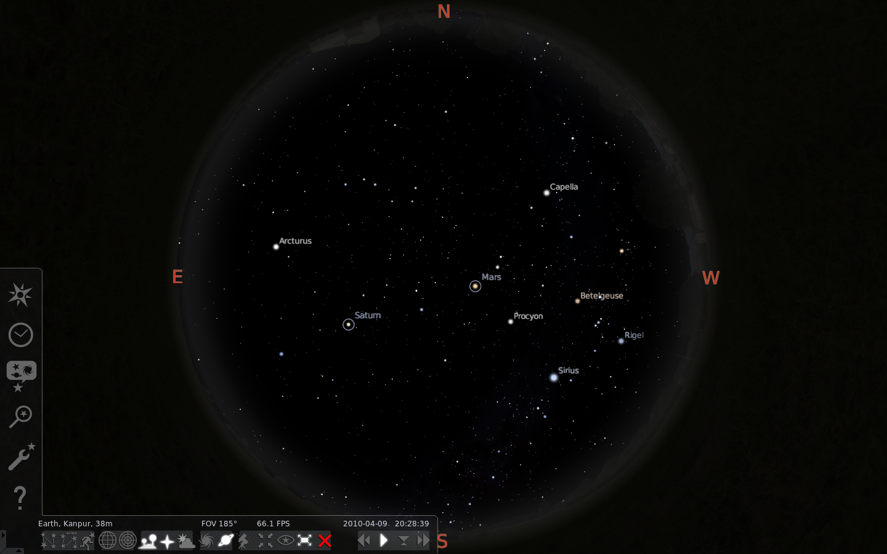
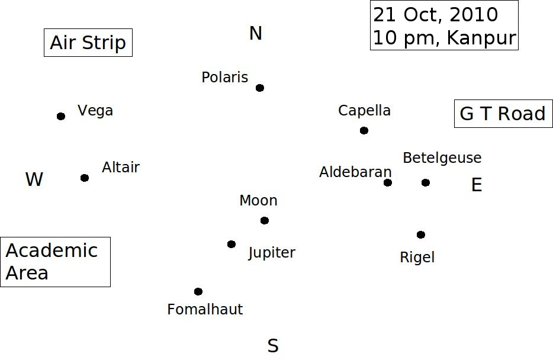

Objective:
To become familiar with the astronomical objects visible to naked eye in the night sky using the software Stellarium. You will create a night sky map at different times. In the map you will identify astronomical objects such as planets, stars, nebula, milky way etc. You will then correlate the objects in the map with the directly observable night sky with naked eye.
Procedure :
- Step 1: Start the software Stellarium. Become familiar with the different controls. The control options are given at the bottom left of the window.
The window may be moved up or down by using the left click on the mouse. The resolution of the window may be adjusted by using the middle key on the
mouse.
 - Step 2: Determine the latitude/longitude of your city from internet (26deg, 24’ N, 80deg 25’ E for Kanpur). Set the location on Stellarium. Set the time by using the time control option. We shall use three different times to view the night sky, 8 PM and 10 PM. The 8 PM time is convenient to view the planets, which often go below the horizon at later times.
- Step 3: The controls and resolution should be set such that (i) the atmosphere is ON (ii) the names of planets are listed, (iii) the entire sky is visible in a single image, (iv) Note that the image produced by Stellarium projected on sky, would exactly match with observed sky. You may turn on the cardinal points according to your convenience.
- Step 4: Create the image at 8 PM. Locate the planets on the map and identify them visually on the sky at the corresponding time. Identify some of the prominent stars both on the image and visually on the sky. Turn on the constellation names (press V). Identify the different constellations visually on the sky. Identify the seven stars group ( Saptrishi in Hindi). These are partially in the constellation Ursa Major. They form a rectangular head with a tail consisting of three stars. The names of the seven stars are given below. Follow the line joining the top two stars to locate the star Polaris (Dhruva). Locate the milky way in the map which indicates the names of constellations. The center of the milky way is in the constellation Sagittarius. The milky way passes through the constellations Scorpius, Ara, Norma, Triangulum Australe, Circinus, Centaurus, Musca, Crux, Carina, Vela, Puppis, Canis Major, Monoceros, Orion and Gemini, Taurus, Auriga, Perseus, Andromeda, Cassiopeia, Cepheus and Lacerta, Cygnus, Vulpecula, Sagitta, Aquila, Ophiuchus, Scutum, and Sagittarius.
- Step 5: Identify the direction North at your location. You may use a compass. Alternatively note the direction from where the Sun comes up in the morning. This is East. Stretch both of your hands with the right hand pointing towards East. Your face points towards North. You may also confirm this by identifying the star Polaris as explained in step 4.
- Step 6: Make a rough drawing of the sky you actually observe manually on a piece of paper or by using a graphics software (as shown in figure given below). Start by labeling the
directions, N, S, E, W. Specify the positions of some prominent features, such as buildings, in your locality on the map. Now draw dots to show the
stars you observe. Compare your map with that shown by Stellarium.
 - Step 7: Repeat above steps at 10 PM. In this case some or all of the planets might disappear.
A very interesting fact to notice is that in 3000 BC the star Thuban in the constellation of Draco was the northern Pole star. Polaris which is at the north pole was earlier not located at the pole and it is predicted that in years to come Vega will get shifted to North Pole. The reason for this is precession of earth's rotational axis, which causes its orientation to change. If the stars were fixed in space, precession would cause the celestial poles to trace out imaginary circles on the celestial sphere approximately once every 26,000 years, passing close to different stars at different times. However, the stars themselves exhibit motion relative to each other, and this so-called proper motion is another cause of the apparent drift of pole stars. Due to the precession of the equinoxes (as well as the stars' proper motions), the role of North Star passes from one star to another.
This can be viewed using stellarium.